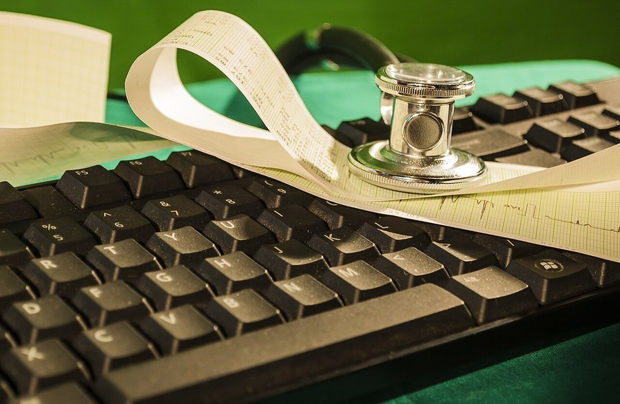

Salt and Blood Pressure: How Much Is Too Much?
The question of how much salt per day is safe for blood pressure has a straightforward guideline and a messier real-world answer. Here's both.

Key takeaways
- Most healthy adults should aim for under 2,300 mg of sodium a day, roughly a teaspoon of salt, with the American Heart Association suggesting 1,500 mg as an ideal limit for most people with high blood pressure.
- The average American eats about 3,400 mg a day, well above either target, mostly from packaged and restaurant food, not the salt shaker.
- Not everyone's blood pressure reacts to salt the same way. "Salt sensitivity" varies by genetics, age and existing health conditions.
- Potassium-rich foods help counteract sodium's effect, which is part of why whole-food diets tend to protect blood pressure better than sodium counting alone.
- Cutting back doesn't have to mean bland food. Most sodium comes from processed and restaurant meals, so cooking more at home is the single biggest lever.
Most healthy adults should keep sodium under 2,300 mg a day, about one teaspoon of salt, and people with high blood pressure often benefit from going lower, closer to 1,500 mg. The average American eats roughly 3,400 mg daily, well past either number, mostly from processed and restaurant food rather than home cooking. How much any individual's blood pressure actually responds to salt varies by genetics and health status.
That's the short version. The longer version explains why the guidelines exist, why your own body might react more or less than someone else's, and what actually moves the needle if you're trying to cut back.
How much salt should you actually eat per day?
US dietary guidelines set the general limit at 2,300 mg of sodium a day for most adults, which works out to about one teaspoon of table salt. The American Heart Association goes further for people who already have high blood pressure or are at risk for it, suggesting an ideal limit closer to 1,500 mg a day. Neither number is about eliminating salt. It's about staying under a threshold where sodium reliably starts pushing blood pressure upward for a large share of the population.
Why does salt raise blood pressure in the first place?
Sodium pulls water into the bloodstream to keep concentrations balanced, which increases blood volume. More volume moving through the same blood vessels raises the pressure against their walls, the same way more water through a garden hose raises pressure if the hose doesn't widen. Over years, consistently elevated pressure also stiffens and damages artery walls, which is the deeper reason sustained high sodium intake is linked to heart disease and stroke, not just a higher number on a cuff.
Is everyone equally sensitive to salt?
No, and this is one of the more useful things to understand about sodium. Roughly a quarter to half of people with high blood pressure, and a smaller share of people with normal blood pressure, are considered "salt-sensitive," meaning their blood pressure rises more sharply in response to sodium intake than the average person's. Salt sensitivity tends to increase with age and is more common in Black Americans, people with diabetes and people with chronic kidney disease. There's no simple home test for it, but if blood pressure runs high despite a reasonably healthy diet, discussing salt sensitivity with a doctor is a reasonable next step.
How much salt are most people actually eating?
Far more than the guidelines recommend. National survey data consistently puts average US sodium intake around 3,400 mg a day for men and somewhat less for women, roughly 50% above the general 2,300 mg limit and well over double the 1,500 mg target for people managing blood pressure. Most of that gap isn't from people salting their food heavily at the table. It comes from how much sodium is already built into processed and prepared food before it reaches a plate.
Where does most dietary sodium actually come from?
| Common source | Roughly |
|---|---|
| Bread and rolls | ~230 mg per slice/roll |
| Deli meat (2 oz) | ~500–700 mg |
| Canned soup (1 cup) | ~700–900 mg |
| Pizza (1 slice) | ~600–750 mg |
| Fast-food sandwich | ~1,000–1,500 mg |
| Table salt added while cooking/eating | Often under 15% of total intake |
Roughly 70% of sodium in a typical American diet comes from packaged, processed and restaurant food, not the salt shaker. That's why "I don't salt my food" often isn't the protective habit people assume it is. Bread, cheese, canned goods, deli meat and restaurant meals carry sodium baked in long before anyone reaches for a shaker.
Does cutting salt really lower blood pressure, and by how much?
For most people, yes, though the size of the drop varies. Clinical research on sodium reduction generally finds blood pressure drops of a few points in systolic pressure for people who meaningfully cut sodium intake, with larger average drops in people who already have high blood pressure or are more salt-sensitive. It's rarely a dramatic, one-variable fix on its own. Combined with the DASH-style eating pattern, which pairs lower sodium with more fruits, vegetables and low-fat dairy, the effect tends to be noticeably larger than cutting sodium alone.
What about salt substitutes and potassium?
Potassium plays a real, well-supported counterbalancing role. It helps the kidneys excrete more sodium and eases tension in blood vessel walls, which is a major reason diets rich in fruits, vegetables, beans and dairy tend to support healthier blood pressure even when sodium intake isn't perfectly low. Potassium-based salt substitutes, which replace some sodium chloride with potassium chloride, have shown real blood pressure benefits in research, but they're not appropriate for everyone, particularly people with kidney disease or those on certain blood pressure medications that already raise potassium. Check with a doctor before switching. For a deeper look at the specific foods involved, see our guide to potassium-rich foods and blood pressure.
Can you have too little sodium?
For the average healthy adult eating real food, going too low is uncommon and not typically dangerous; most people's actual challenge is cutting down from a much higher baseline, not approaching a deficiency. Very low sodium becomes a legitimate concern in specific situations, including certain heart failure treatments, excessive fluid intake, or some endurance sports with heavy, prolonged sweating. Those are medical scenarios managed directly with a doctor, not reasons for the average person to stop watching their sodium intake.
How can you cut back without it feeling impossible?
- Cook more meals at home, where you control how much salt goes in, instead of relying on packaged or restaurant food.
- Read nutrition labels and compare brands; sodium content varies widely between similar products like bread, soup and sauces.
- Lean on herbs, citrus, garlic and vinegar for flavor instead of extra salt.
- Rinse canned beans and vegetables, which removes a meaningful share of their added sodium.
- Build meals around more fruits and vegetables, which naturally dilutes the sodium share of your overall diet while adding potassium.
When should you see a doctor about blood pressure and salt?
See a doctor if your blood pressure reads consistently at or above 130/80 mmHg at home, if you've been told you're borderline or high and haven't had a follow-up plan, or if you want to know whether you personally fall into the more salt-sensitive group. A doctor can also help you weigh sodium changes against any medications you're on, since some diuretics and blood pressure drugs interact with sodium and potassium intake in ways that are worth managing together rather than guessing at. Our guide to how to lower blood pressure naturally covers the other habits, beyond sodium, that move the same number.
Salt is one lever among several for blood pressure, alongside weight, activity, alcohol and stress. It's a meaningful one, and for a lot of people it's also the easiest one to adjust once you know where the sodium in your diet is actually hiding. Tracking a few days of eating honestly, including the bread and the canned soup, usually reveals more than any general rule of thumb. For the bigger picture on what else your numbers mean, see our explainer on LDL vs HDL cholesterol and our breakdown of resting heart rate by age.
Frequently asked questions
Is sea salt healthier than table salt for blood pressure?
No. Sea salt and table salt contain almost the same amount of sodium by weight. Any health difference between them is marketing, not chemistry, and neither one is a safer choice for blood pressure than the other.
Does potassium really offset sodium's effect on blood pressure?
To a meaningful degree, yes. Potassium helps the body excrete excess sodium and relaxes blood vessel walls, which is why diets rich in fruits and vegetables tend to blunt sodium's effect on blood pressure compared with a low-potassium diet.
How quickly can cutting salt lower blood pressure?
Some people see a measurable drop within a few weeks of consistently lower sodium intake. The size of the effect varies by individual, and it's typically one part of a broader approach alongside weight, activity and overall diet quality.
Is all sodium from salt, or does food naturally contain it?
Most dietary sodium comes from salt added during food processing, cooking or at the table, not naturally occurring sodium in whole foods. Packaged and restaurant food accounts for the large majority of sodium intake for most people.
Does sweating a lot change how much salt you need?
Heavy, prolonged sweating, such as during intense exercise in heat, does increase sodium loss and may call for slightly more salt or an electrolyte drink. This applies to a fairly small group of very active people, not the average adult.
Can cutting salt too much be dangerous?
For most healthy adults, going below typical recommended ranges from food alone is uncommon and not dangerous. Very low sodium can be a problem in specific medical situations, such as certain heart failure treatments or excessive fluid intake, which a doctor would manage directly.
Does salt affect blood pressure the same way in children?
Children's sodium needs are lower than adults', and high sodium intake in childhood is linked to higher blood pressure later in life. Pediatric guidelines generally recommend notably less sodium per day than adult targets, scaled to age.
Related: How to lower blood pressure naturally · Potassium-rich foods and blood pressure · LDL vs HDL cholesterol · Resting heart rate by age
Image: Ivan2010 / Wikimedia Commons / CC BY-SA 4.0